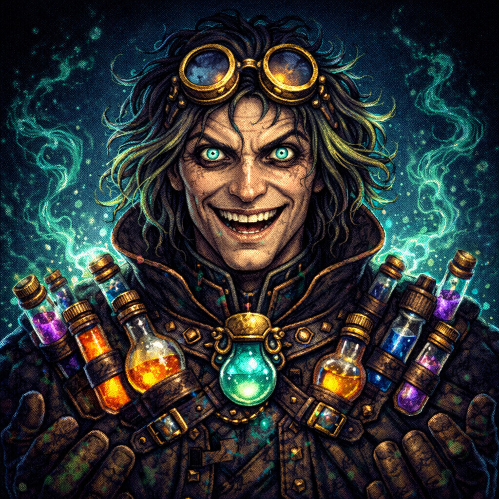
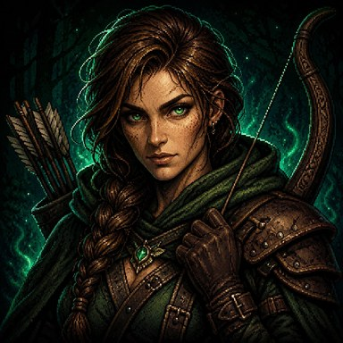
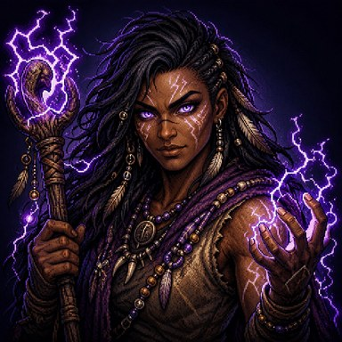
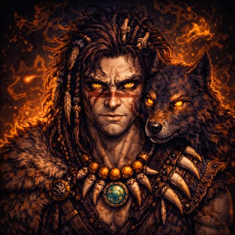

HOW TO READ THIS
Every class has a passive that is always on, a unique 9th equipment slot only that class can use, exactly one active skill, and a skill tree of 60 nodes.
Separately, a divine item can grant a divine skill, which sits in its own slot alongside your class skill. Those are listed at the end.
Skill trees split into four branches — Offense, Defense, Utility, Mastery — across four tiers gated by character level: Tier 1 at level 1, Tier 2 at 5, Tier 3 at 10, Ultimate at 15. Dimmed entries are small stat traits (+3% crit, +5% attack); the rest change how the class plays.
UNLOCK ORDER
| FLOOR | CLASS | ACTIVE SKILL | PASSIVE |
|---|---|---|---|
| Default | Knight | Bulwark | 15% chance to block incoming attacks completely. |
| Default | Rogue | Backstab | 10% chance to dodge attacks. Critical hits deal 75% bonus damage. |
| Floor 15 | Alchemist | Brew Surge | Absorb buffs are 30% stronger and last 1 turn longer. +1 active absorb buff slot. +10% sacrifice value at shrine. |
| Floor 20 | Monk | Hundred Fists | Each attack builds a Combo (max 10): +3% damage per stack. Defending breaks the flow and halves your Combo. At full Combo, strikes may hit twice. |
| Floor 20 | Ranger | Hunter’s Volley | Attacks against a Marked target cannot miss; at max Marks they always crit. Taking no damage in a round sharpens your next shot (+1 Mark). |
| Floor 20 | Ronin | Iaido: Drawing Cut | Defending counters incoming blows and builds Focus. Below 40% HP, gain crit and lifesteal. |
| Floor 25 | Paladin | Holy Smite | 12% block chance. Blocking heals 15% of blocked damage and reflects 100% back. +20% healing effectiveness. |
| Floor 30 | Mage | Fireball | Spells deal bonus damage based on Spell Damage stat. Start with 5 MP. |
| Floor 30 | Stormcaller | Chain Lightning, Static Shroud, Thunderclap, Eye of the Storm | Basic attacks arc to one additional enemy. Zari commands a kit of storm spells, each honed by its own path of mastery. |
| Floor 35 | Beastmaster | Werewolf Form | Forge a bond with wild beasts that fight at your side. Call on primal fury to shift the tide of battle. |
| Floor 40 | Chronomancer | Quicken | The first enemy attack each battle is fully negated — he saw it coming — and negating it grants Time. He also banks a little Time at the start of every battle. |
| Floor 40 | Vampire | Vampire Bite | Heal for 15% of all damage dealt. Attacks have a chance to confuse enemies. |
| Floor 45 | Necromancer | Soul Drain | Collect Souls from slain enemies (max 10). Each Soul: +3% damage, +2% lifesteal, +5 HP. 8% base lifesteal. |
| Floor 50 | Berserker | Battle Cry | Deal 1% more damage for each 1% of missing health. +50% double strike chance below 30% HP. |
CLASSES
 KNIGHTAvailable from the start
KNIGHTAvailable from the start
PASSIVE
15% chance to block incoming attacks completely.
CLASS SLOT
Defense, Block Chance & Max HP. Rally your troops behind the Iron Order’s standard.
ACTIVE SKILL
Bulwark 1 MP, 5 turn cooldown
Create a powerful shield absorbing damage for 3 turns.
SKILL TREE
OFFENSE
Tier 1 — level 1
- Keen Edge — Keen steel. +4% crit chance.
- Sharper Edge — +3% crit chance.
- Steady Hand — +5% attack.
- First Strike — Open with authority. First attack deals +25% damage.
- Battle Fury — +5% attack.
- Razor’s Edge — +3% crit chance.
Tier 2 — level 5
- Armor Crusher — Precision strikes. Crits ignore 25% enemy DEF. Crits also leave them Vulnerable (+20% damage taken, 3t).
- Piercing Crit — +5% crit damage.
- Killing Blow — +5% attack.
- Momentum — Momentum. Kills grant +20% ATK for 2 turns.
- Bloodlust — +5% attack.
- Crit Specialist — +5% crit damage.
Tier 3 — level 10
- Executioner — No mercy. Enemies below 12% HP are instantly executed.
- Warlord — Victory breeds power. Kills grant +20% ATK, +8% crit for 2 turns.
Ultimate — level 15
- Blade Storm — Every attack strikes twice. Each hit crits independently.
DEFENSE
Tier 1 — level 1
- Thick Armor — Sturdy plate. +5% DEF.
- Plate Backing — +4% DEF.
- Conditioning — +5% max HP.
- Spiked Shield — Spiked armor. Reflect 10 flat damage to attackers.
- Hardened Hide — +4% DEF.
- Sturdy Frame — +5% max HP.
Tier 2 — level 5
- Iron Skin — Iron skin. -8% damage taken. Below 40% HP: +8% DEF.
- Reinforced Stance — +5% DEF.
- Endurance — +6% max HP.
- Retaliation — Punish every blow. 15% counter-attack chance on hit.
- Mirror Plating — +5% DEF.
- Tempered Will — +6% max HP.
Tier 3 — level 10
- Fortress — Immovable wall. Start combat with 15% HP shield. -5% damage taken.
- Retribution — Armor fights back. 20% counter-attack chance. +15 thorns.
Ultimate — level 15
- Immortal Guardian — Cheat death once: revive at 30% HP. +15% DEF.
UTILITY
Tier 1 — level 1
- Vigor — Warrior’s vitality. +8% max HP.
- Hale — +5% max HP.
- Slow Mend — +2 life regen per turn.
- Regeneration — Wounds close. +3 life regen per turn.
- Bloodied Blade — +2 life on hit.
- Vampiric Edge — +3% lifesteal.
Tier 2 — level 5
- Warrior’s Heart — Vitality enhances healing. +12% HP. Potions heal 10% more.
- Robust — +25 flat HP.
- Mending Pulse — +3 life regen per turn.
- Battle Recovery — Kills mend wounds. Heal 6% max HP on kill.
- Hungering Steel — +3 life on hit.
- Sanguine — +5% lifesteal.
Tier 3 — level 10
- Colossus — Mountain of HP. +50 flat HP. Start with 8% HP shield.
- Second Wind — Refuse to fall. Below 30%: heal 15% max HP once per combat.
Ultimate — level 15
- Living Fortress — Living fortress. +30% max HP. Start with 20% HP shield.
MASTERY
Tier 1 — level 1
- Reinforced Shield — Thicker barriers. Bulwark shield +25% stronger.
- Bracing — +4% DEF.
- Shield Strike — +4% attack.
- Quick Fortify — Faster deployment. Bulwark CD -1.
- Steadfast — +5% max HP.
- Tempered Plate — +4% DEF.
Tier 2 — level 5
- Shield Bash — Shield empowers blade. +20% ATK while shielded.
- Heavy Plate — +5% DEF.
- Crushing Aegis — +5% attack.
- Reactive Shielding — Instinctive protection. Bulwark CD -1, +1 turn duration.
- Resolute — +6% max HP.
- Granite Stance — +5% DEF.
Tier 3 — level 10
- Aegis Explosion — Shield detonates. Deals stored shield value as AoE on expire.
- Eternal Guard — Iron guard. While shielded: -15% damage taken, stun immune.
Ultimate — level 15
- Iron Bastion — Iron Bastion. Bulwark +50% shield. +10% lifesteal while shielded.
 ROGUEAvailable from the start
ROGUEAvailable from the start
PASSIVE
10% chance to dodge attacks. Critical hits deal 75% bonus damage.
CLASS SLOT
Crit Chance, Crit Damage & Extra Attack. Coat your blades in lethal toxins.
ACTIVE SKILL
Backstab 1 MP, 5 turn cooldown
Strike from the shadows for devastating damage, then vanish — the next enemy attack misses you completely.
SKILL TREE
OFFENSE
Tier 1 — level 1
- Honed Edge — A blade is only as patient as the hand that holds it. +5% crit chance.
- Whetted Steel — +3% crit chance.
- Iron Wrist — +5% attack.
- First Blood — The duel is decided before it begins. First attack deals +25% damage.
- Sure Grip — +6% attack.
- Merciless — +10% crit damage.
Tier 2 — level 5
- Through The Armor — The cut finds the seam, not the plate. Critical hits ignore half the target’s defense. +5% attack.
- Killing Angle — +8% crit damage.
- Follow Through — +5% attack.
- No Second Chance — A stumbling foe has already lost. +20% damage to stunned enemies. +5% attack.
- Cold Certainty — +6% attack.
- Killing Intent — +4% crit chance.
Tier 3 — level 10
- Drawing Breath — Every held moment feeds the draw. Iaido deals +15% more damage per Focus spent. +8% attack.
- Mercy Stroke — The beaten are not made to suffer. Instantly kill enemies below 18% HP. +15% crit damage.
Ultimate — level 15
- The Severing — One breath. One arc. Nothing on the other side. Iaido deals +25% more damage per Focus, instantly kill enemies below 20% HP, and +10% attack.
DEFENSE
Tier 1 — level 1
- Set Stance — Rooted before the first step is taken. Start each battle with a 15% Max HP shield.
- Lacquered Plate — +4% defense.
- Steady Breath — +5% Max HP.
- Falling Leaf — Do not block what you can simply not be there for. +8% dodge.
- Light Step — +3% dodge.
- Weathered Hide — +5% Max HP.
Tier 2 — level 5
- Immovable — The mountain does not flinch at rain. Take 8% less damage. +6% Max HP.
- Braced Footing — +5% defense.
- Weathered Frame — +6% max HP.
- Answering Steel — Every blow you take is a question. Answer it. Riposte deals +15% of your Attack. +5% dodge.
- Unflinching — +5% defense.
- Iron Discipline — +25 flat HP.
Tier 3 — level 10
- Counterstance Mastery — The guard is not a wall. It is a coiled spring. Riposte deals +20% of your Attack and you take 8% less damage.
- Cornered Blade — A masterless sword is sharpest with its back to the wall. Take 10% less damage and +10% Max HP.
Ultimate — level 15
- Mirror Of Steel — Strike him and you strike yourself. Riposte deals +30% of your Attack, revive once at 35% HP, and +10% Max HP.
UTILITY
Tier 1 — level 1
- Field Dressing — No lord’s healer rides with you. +3 Life Regen.
- Drinking Steel — +3% lifesteal.
- Hard Living — +5% Max HP.
- Sellsword’s Purse — Honor does not buy rice. +10% gold find.
- Appraiser’s Eye — +5% magic find.
- Lessons Of The Road — +5% XP bonus.
Tier 2 — level 5
- Blood For Breath — A fallen foe is a moment to inhale. Killing an enemy heals 5% Max HP. +5% Max HP.
- Old Scars — +4% lifesteal.
- Slow Breathing — +3 life regen per turn.
- Spoils Of The Duel — The dead have no use for coin. Killing an enemy grants bonus gold. +5% magic find.
- Lean Years — +8% gold find.
- Wanderer’s Eye — +8% magic find.
Tier 3 — level 10
- Meditation — Stillness is not rest. It is preparation. Bank +1 extra Focus each time you Defend. +5% lifesteal.
- Deep Well — A longer draw for a longer patience. +1 max Focus and +10% gold find.
Ultimate — level 15
- The Masterless Way — No lord, no banner, no debts. Bank +1 more Focus per Defend, kills heal 5% Max HP, and +15% gold find.
MASTERY
Tier 1 — level 1
- Discipline — The guard is where the sword is sharpened. Bank +1 extra Focus each time you Defend.
- Clear Mind — +3% crit chance.
- Quiet Strength — +5% attack.
- Swift Draw — The sword leaves the sheath before the eye follows. +5% extra attack.
- Wandering Endurance — +5% Max HP.
- Reading The Blade — +3% crit chance.
Tier 2 — level 5
- Coiled Patience — Held breath becomes force. +8% extra attack.
- Zanshin — +4% crit chance.
- Sharpened Focus — +5% crit damage.
- Unspent Stillness — Not every drop of calm leaves with the cut. Iaido keeps half your Focus instead of spending it all. +5% attack.
- Perfect Form — +5% attack.
- Flowing Draw — +5% attack speed.
Tier 3 — level 10
- Bottomless Calm — There is always more stillness to draw from. +1 max Focus and +8% attack.
- One Cut, One Life — A lifetime of waiting, spent in a single arc. Iaido deals +15% more damage per Focus and +10% extra attack.
Ultimate — level 15
- Mind Like Still Water — The pond is cut, and closes again unbroken. Iaido strikes EVERY enemy on the field for its FULL damage, deals +10% more damage per Focus, and +1 max Focus.

ALCHEMISTClear floor 15
PASSIVE
Absorb buffs are 30% stronger and last 1 turn longer. +1 active absorb buff slot. +10% sacrifice value at shrine.
CLASS SLOT
Spell Damage, Healing Power & Lifesteal. A bubbling distillation vessel that brews power from absorbed essence.
ACTIVE SKILL
Brew Surge 1 MP, 6 turn cooldown
Hurl every active brew at all enemies. Deals 2.0–3.5× AoE damage and grants up to +60% ATK / +40% Crit Chance for 3 turns. Scales with absorb buffs consumed (requires at least one).
SKILL TREE
OFFENSE
Tier 1 — level 1
- Volatile Reagents — Drinking an MP potion detonates 8 splash damage across the enemy line. +5 spell damage.
- Crystalline Mind — +5 spell damage.
- Refined Spark — +5% crit damage.
- Toxic Spill — Spilled potions seep into wounds. Drinking an HP potion also poisons the nearest enemy for 2% maxHP × 3 turns.
- Quickened Hand — +3% crit chance.
- Searing Mix — +5 spell damage.
Tier 2 — level 5
- Bottled Lightning — MP potions arc to the mind. MP potion grants +20% crit chance for 3 turns. +5% crit chance.
- Volatile Reagent — +8 spell damage.
- Sharp Reaction — +8% crit damage.
- Cascade — Reactions chain through the line. Basic attacks poison (3 dmg × 3t). Poison has 20% chance to spread on tick.
- Lethal Compound — +8 spell damage.
- Acid Edge — +4% crit chance.
Tier 3 — level 10
- Reactive Catalyst — Critical reactions ignite reagents. Crits bleed 3% maxHP for 3 turns and detonate all DoTs on the target. DoTs extend by 1 turn on hit. +10 spell damage.
- Lingering Toxin — Toxins refuse to fade. +30% damage vs bleeding/poisoned enemies. Attacks corrode (4/turn + armor melt, 3t). DoTs extend by 1 turn on hit. +10 spell damage.
Ultimate — level 15
- Overdose — Carry the cure to its limit. Brew Surge deals +10% damage per HP/MP potion you still carry. +30 spell damage.
DEFENSE
Tier 1 — level 1
- Iron Stomach — Body adapts to its own poisons. 8% damage reduction. +3 life regen.
- Hardy Body — +5% max HP.
- Inner Resilience — +5% max HP.
- Tonic Shield — Healing draughts harden the skin. HP potion grants a 30% maxHP shield.
- Reflective Glass — +4% block chance.
- Steady Hand — +4% defense.
Tier 2 — level 5
- Sympathetic Sip — Reagents cross-react. HP potion also refunds 1 MP. MP potion also heals 5% maxHP.
- Restorative Tonic — +3 HP regen.
- Vital Reserve — +6% max HP.
- Hardened Skin — Bitter brews thicken the hide. HP potion grants +30% DEF for 3 turns. +5% defense.
- Lasting Cure — +6% max HP.
- Sturdy Vial — +5% defense.
Tier 3 — level 10
- Overflow Vial — No drop wasted. HP potion overheal converts to a temporary shield. +10% max HP.
- Liquid Courage — Bottled fury fuels the fight. HP potion grants +30% ATK for 3 turns. +5% lifesteal.
Ultimate — level 15
- Universal Cure — The final antidote. Revive once per run at 50% HP. +5% lifesteal.
UTILITY
Tier 1 — level 1
- Cheap Reagents — The shop knows your face. -15% shop prices.
- Frugal Apothecary — +5% gold find.
- Buyer’s Eye — +5% magic find.
- Pre-Brewed Shield — The alembic stays warm between battles. Start each battle with a 10% maxHP shield.
- Deep Mind — +1 max MP.
- Scholar’s Eye — +5% XP bonus.
Tier 2 — level 5
- Bottle Service — Reagents tumble from broken foes. 10% chance enemy kill drops a free potion. +10% gold find.
- Market Knowledge — +8% gold find.
- Sharp Trade — +5% magic find.
- Bigger Vials — More shelves on the alembic rack. +1 max absorb slot per battle.
- Ample Stocks — +3 gold per kill.
- Wise Investment — +8% XP bonus.
Tier 3 — level 10
- Bounty Catalyst — Prepared brews shield the merchant. Start each battle with a 15% maxHP shield. +5 gold per kill.
- Liquid Knowledge — Mastery makes every reagent potent. Absorbed items grant +10% extra stat strength. +10% magic find.
Ultimate — level 15
- Philosopher’s Stone — The final transmutation. +1 max absorb slot. +25% gold and magic find.
MASTERY
Tier 1 — level 1
- Catalyst Memory — The alembic remembers the first reagent of the day. The first absorb each battle is FREE.
- Concentrated — +5 spell damage.
- Stable Form — +5% max HP.
- Recursive Distillation — Some essence always lingers. 25% chance Brew Surge keeps one consumed absorb buff.
- Pure Focus — +3% crit chance.
- Mind Clarity — +5 spell damage.
Tier 2 — level 5
- Volatile Surge — Brew Surge cycles faster. -1 turn skill cooldown. +10 spell damage.
- Refined Will — +1 max MP.
- Steady Burn — +5% crit damage.
- Reagent Mastery — Every drop counts twice. +20% potion healing.
- Studied Form — +5% max HP.
- Adept Hand — +1 max MP.
Tier 3 — level 10
- Residue — The brew leaves a lasting stain. Brew Surge poisons every enemy hit (5 dmg × 3 turns). +10% attack.
- Twin Flask — Two flasks, one cast. Brew Surge fires its AoE damage burst twice.
Ultimate — level 15
- Master Brew — The final recipe. +30 spell damage. -1 turn skill cooldown. +20% crit damage.
MONKClear floor 20
PASSIVE
Each attack builds a Combo (max 10): +3% damage per stack. Defending breaks the flow and halves your Combo. At full Combo, strikes may hit twice.
CLASS SLOT
Attack, Crit Damage & Extra Attack. Sacred prayer beads that keep your combo flowing between blows.
ACTIVE SKILL
Hundred Fists 1 MP, 3 turn cooldown
Unleash a flurry of blows, spending your Combo to deal damage that grows with the stacks consumed.
SKILL TREE
OFFENSE
Tier 1 — level 1
- Iron Palm — Your strikes bite deeper. +1% damage per Combo stack.
- Focused Strikes — +3% crit chance.
- Tempered Fist — +5% attack.
- Twin Palm — Blows come in pairs. Build +1 extra Combo per attack.
- Quick Hands — +5% extra attack.
- Loose Stance — +3% crit chance.
Tier 2 — level 5
- Rising Dragon — Momentum swells. +2 max Combo and +1% more damage per Combo stack.
- Killing Intent — +4% crit chance.
- Heavy Hands — +6% attack.
- Cascade Strikes — Precision feeds the chain. Crits build +1 Combo, and +10% flurry chance at max Combo.
- Flowing Motion — +6% extra attack.
- Sharp Focus — +10% crit damage.
Tier 3 — level 10
- River’s Might — The current is unstoppable. +2% more damage per stack, and at max Combo every hit crits.
- Thousand Palms — An unending torrent. +25% flurry chance at max Combo and +1 more Combo per attack.
Ultimate — level 15
- Unrelenting Torrent — The current cannot be stopped. +5 max Combo and a further +2% damage per stack — on top of River’s Might, for +4% in total.
DEFENSE
Tier 1 — level 1
- Wind Step — Flow around the blow. +8% dodge.
- Hardened — +4% defense.
- Deep Breath — +5% Max HP.
- Rooted Stance — Stand like the mountain. +10% Max HP.
- Light Feet — +3% dodge.
- Calm Mind — +5% Max HP.
Tier 2 — level 5
- Redirect — Turn force aside. When hit, 30% chance to counter. +5% dodge.
- Rooted — +6% Max HP.
- Unbending — +5% defense.
- Iron Discipline — The chain never breaks. Defending no longer clears your Combo. +5% defense.
- Evasive — +4% dodge.
- Fluid Guard — +5% defense.
Tier 3 — level 10
- Mirror Stance — Become untouchable. When hit, 50% chance to counter. +10% dodge.
- Immovable — Nothing moves you. Take 10% less damage and +10% Max HP.
Ultimate — level 15
- Unshakable Mountain — You do not fall and you do not break. Revive once at 35% HP, and +15% defense.
UTILITY
Tier 1 — level 1
- Chi Flow — Violence becomes vigor. Heal 0.5% of damage per Combo stack.
- Inner Peace — +3% lifesteal.
- Steady Hand — +3% crit chance.
- Momentum — Open in motion. Start each battle with 2 Combo.
- Keen Sense — +5% magic find.
- Disciplined — +5% XP bonus.
Tier 2 — level 5
- Meditation — Breath restores. Combo lifesteal grows to 1% per stack, and regen 3 HP each turn.
- Serenity — +4% lifesteal.
- Focus — +5% Max HP.
- Rolling Start — Hit the ground running. Start battles with 4 Combo. +5% gold find.
- Swift Learner — +6% XP bonus.
- Fortune’s Fist — +8% gold find.
Tier 3 — level 10
- One With All — Body and battle as one. Combo lifesteal reaches 2% per stack. +5% lifesteal.
- Endless Chain — The chain never ends. Combo carries across floors, and kills build +1 Combo.
Ultimate — level 15
- Perpetual Motion — The chain never rests. Start battles with 5 Combo, and kills build one more Combo — +2 per kill together with Endless Chain.
MASTERY
Tier 1 — level 1
- Empty Hand — The finisher comes sooner. -1 turn skill cooldown. +5% attack.
- Ki Surge — +10% crit damage.
- Chained Breath — +5% attack.
- Flowing Kata — Every kill feeds the form. Kills build +1 Combo.
- Enduring — +5% Max HP.
- Resolve — +4% defense.
Tier 2 — level 5
- Rushing Wind — Sharpen the killing blow. Hundred Fists +5% damage per Combo, and -1 turn skill cooldown.
- Deadly Focus — +12% crit damage.
- Precision — +4% crit chance.
- Endless Fists — Don’t stop swinging. Hundred Fists keeps half your Combo instead of spending it all.
- Iron Will — +6% Max HP.
- Grit — +3% lifesteal.
Tier 3 — level 10
- Perfect Strike — A flawless finish. Hundred Fists +8% damage per Combo and ignores defense.
- Unbroken Chain — The chain outlives the blow. Hundred Fists keeps 75% of your Combo. +8% Max HP.
Ultimate — level 15
- Ten Thousand Fists — The perfect finish. Hundred Fists +10% damage per Combo, and -1 turn skill cooldown.

RANGERClear floor 20
PASSIVE
Attacks against a Marked target cannot miss; at max Marks they always crit. Taking no damage in a round sharpens your next shot (+1 Mark).
CLASS SLOT
Attack, Crit Chance & Extra Attack. A hunter’s sigil that brands your prey and deepens every Mark.
ACTIVE SKILL
Hunter’s Volley 1 MP, 3 turn cooldown
Loose a volley that Marks every enemy, then detonate all Marks on your target for a burst of damage.
SKILL TREE
OFFENSE
Tier 1 — level 1
- Precise Shot — A steadier aim finds the gaps. +5% crit chance.
- Keen Eye — +3% crit chance.
- Drawn Bow — +5% attack.
- Barbed Arrows — Serrated heads tear on the way out. Attacks apply a light Bleed.
- Heavy Shot — +5% attack.
- Deadly Aim — +10% crit damage.
Tier 2 — level 5
- Armor Piercer — Broadhead tips punch through plate. Critical hits ignore half the target’s defense. +4% crit chance.
- Sharpshooter — A steady eye finds the gap. +4% crit chance. +12% Accuracy (cancels enemy Evasion).
- Full Draw — +6% attack.
- Concussive Shot — Reeling prey can’t defend. +20% damage to stunned enemies. +5% attack.
- Lethality — +10% crit damage.
- Power Draw — +6% attack.
Tier 3 — level 10
- Hemorrhage — Your arrows leave wounds that won’t close. Attacks apply a heavy Bleed. +8% attack.
- Executioner’s Aim — Finish the wounded before they run. Instantly kill enemies below 20% HP. +15% crit damage.
Ultimate — level 15
- Killing Spree — Death follows your aim. Crits ignore all defense, and +10% attack.
DEFENSE
Tier 1 — level 1
- Light Step — Stay one pace ahead of the strike. +8% dodge.
- Fleet — +3% dodge.
- Wind-Read — +5% Max HP.
- Thornbrush — Those who close on you bleed for it. +5 Thorns.
- Hardy — +5% Max HP.
- Braced — +4% defense.
Tier 2 — level 5
- Evasive Roll — Tumble clear and reset your footing. After being hit, +15% dodge for 2 turns. +6% dodge.
- Nimble — +4% dodge.
- Guarded — +5% defense.
- Thornbrush Traps — Snares and brambles ring your position. +8 Thorns and +5% defense.
- Sturdy — +6% Max HP.
- Ironbark — +5% defense.
Tier 3 — level 10
- Vanish — When cornered, you melt into cover. Below 35% HP, gain a large defense bonus. +10% dodge.
- Camouflage — The wilds hide their hunter. Take 10% less damage and +10% Max HP.
Ultimate — level 15
- Ghost Walker — They can never catch what they can’t see. +15% dodge, revive once at 35% HP, and +10% Max HP.
UTILITY
Tier 1 — level 1
- Poison Arrows — Coat your tips in venom. Attacks apply Poison.
- Bloodletter — +3% lifesteal.
- Field Rations — +3 Life Regen.
- Scavenger — Nothing on the trail goes to waste. +10% gold find.
- Tracker — +5% magic find.
- Woodlore — +5% XP bonus.
Tier 2 — level 5
- Toxic Coating — A deadlier brew clings to every shaft. Attacks apply a stronger Poison and +3% lifesteal.
- Vital Draw — +4% lifesteal.
- Leeching Barbs — +3 Life on Hit.
- Hunter’s Bounty — The best pelts fetch a fine price. Killing an enemy grants bonus gold. +5% magic find.
- Keen Learner — +6% XP bonus.
- Prospector — +8% gold find.
Tier 3 — level 10
- Field Dressing — Every kill is a moment to bind your wounds. Killing an enemy heals 5% Max HP. +5% Max HP.
- Pack Hunter — You never stalk just one. Apply +1 extra Mark per attack. +10% gold find.
Ultimate — level 15
- Apex Predator — The top of the food chain. Kills heal 5% Max HP and grant bonus gold, and apply +1 extra Mark per attack.
MASTERY
Tier 1 — level 1
- Hunter’s Mark — The hunt begins in earnest. +1 max Mark and +1 Mark applied per attack.
- Focused Hunt — +3% crit chance.
- Steady Nerve — +5% attack.
- Keen Instinct — You read the moment to loose. Apply +1 extra Mark per attack.
- Enduring Hunt — +5% Max HP.
- Marksman — +3% crit chance.
Tier 2 — level 5
- Cull the Weak — Wounded prey is prey undone. Marked enemies below 20% HP take +30% damage from you.
- Merciless — +12% crit damage.
- Predator — +4% crit chance.
- Ricochet — Your shots find fresh targets when prey drops. +1 max Mark, +4% crit chance, and -1 turn skill cooldown.
- Bloodhound — +10% crit damage.
- Relentless — +5% attack.
Tier 3 — level 10
- Killing Ground — No quarter on your hunting field. +2 max Marks, +1 Mark per attack, and +5% crit chance.
- Master Hunter — The perfect stalker never misses a beat. +1 max Mark, +1 Mark per attack, and +15% crit damage.
Ultimate — level 15
- Open Season — Everything is prey now. +2 max Marks, +1 Mark per attack, Marked enemies below 20% HP take +30% damage, and +5% crit chance.
RONINClear floor 20
PASSIVE
Defending counters incoming blows and builds Focus. Below 40% HP, gain crit and lifesteal.
CLASS SLOT
Attack, Crit Damage & Max HP. A worn whetstone that keeps the blade honed: +1 Focus whenever you Defend, +2 Focus cap, +20% riposte damage, and the first Iaido of every battle always critically strikes.
ACTIVE SKILL
Iaido: Drawing Cut 3 turn cooldown
Unsheathe in a single breath, spending all Focus for one devastating cut. The deeper the Focus, the deeper the wound — at full Focus the draw always strikes true.
SKILL TREE
OFFENSE
Tier 1 — level 1
- Precision — Sharp eye. +5% crit chance.
- Hawkeye — +3% crit chance.
- Lethal Strikes — +5% crit damage.
- Toxin Coating — Venomous blades. Basic attacks poison (3 dmg, 2 turns).
- Venomwright — +5% attack.
- Apothecary — +3% crit chance.
Tier 2 — level 5
- Killing Blow — Smell blood. +30% damage vs enemies below 40% HP.
- Pinpoint — Strike the seam. +4% crit chance. +10% Accuracy (cancels enemy Evasion).
- Brutal Edge — +8% crit damage.
- Festering Wounds — Critical cuts bleed. Crits apply bleed (15% ATK/turn, 3 turns).
- Predator — +5% attack.
- Cruel Cut — +5% crit damage.
Tier 3 — level 10
- Assassinate — One clean strike. Enemies below 15% HP are executed.
- Virulence — Poison lingers. DoTs extend 1 turn on hit. +20% vs bleeding. Crits inflict Mortal Wound — they can’t heal (3t).
Ultimate — level 15
- Death Mark — Death mark. First attack: +100% damage. +50% crit damage.
DEFENSE
Tier 1 — level 1
- Evasion — Hard to pin down. +6% dodge chance.
- Quickstep — +3% dodge chance.
- Lithe — +5% max HP.
- Riposte — Turn defense to offense. 15% counter-attack chance.
- Counter Edge — +3% crit chance.
- Reflexes — +3% dodge chance.
Tier 2 — level 5
- Smoke Screen — Vanish. After being hit: +15% dodge for 2 turns.
- Phantom Step — +4% dodge chance.
- Resilient Frame — +6% max HP.
- Counter-Strike — Punish every miss. 25% counter-attack chance.
- Vicious Strike — +5% crit damage.
- Slippery — +4% dodge chance.
Tier 3 — level 10
- Elusive — Untouchable. +12% dodge chance.
- Blade Dance — Each dodge empowers. 30% counter-attack. +5% crit.
Ultimate — level 15
- Phantom — Phantom. +15% dodge. -15% damage taken.
UTILITY
Tier 1 — level 1
- Pickpocket — Sticky fingers. +12% bonus gold.
- Coin Sense — +8% gold find.
- Glittering Eye — +5% magic find.
- Quick Reflexes — Always first. +8% extra attack.
- Sleek Form — +4% attack.
- Sharp Eyes — +3% crit chance.
Tier 2 — level 5
- Treasure Hunter — Nose for treasure. +8% magic find. -10% shop prices.
- Greedy Heart — +10% gold find.
- Lucky Strikes — +6% magic find.
- Flurry — Two strikes in one. 15% double-strike chance.
- Cyclone — +5% attack.
- Whirling — +5% crit damage.
Tier 3 — level 10
- Master Thief — Every kill pays. +5 gold on kill. +5% magic find.
- Blinding Speed — Blur of steel. 10% double-strike. +10% extra attack.
Ultimate — level 15
- Opportunist — Master thief. -25% shop prices. +20% gold.
MASTERY
Tier 1 — level 1
- Twisted Blade — Deeper wounds. Backstab +25% damage.
- Wicked Edge — +5% attack.
- Heartseeker — +5% crit damage.
- Shadow Ready — Shadow recovery. Backstab CD -1.
- Fleet Foot — +3% dodge chance.
- Quick Draw — +3% crit chance.
Tier 2 — level 5
- Ambush — Perfect ambush. Backstab always crits.
- Slayer — +5% attack.
- Devastate — +8% crit damage.
- Ghost Step — Vanish after striking. Backstab CD -1. +5% dodge.
- Wraith — +4% dodge chance.
- Surgical — +4% crit chance.
Tier 3 — level 10
- Eviscerate — Wounds never close. Backstab applies bleed (30% ATK, 3 turns).
- Shadow Dance — Momentum carries. After Backstab: next attack +50% damage.
Ultimate — level 15
- Perfect Assassination — Perfect kill. Backstab hits twice. +25% damage.
 PALADINClear floor 25
PALADINClear floor 25
PASSIVE
12% block chance. Blocking heals 15% of blocked damage and reflects 100% back. +20% healing effectiveness.
CLASS SLOT
Defense, Life Regen & Max HP. A blessed fragment radiating divine protection.
ACTIVE SKILL
Holy Smite 1 MP, 5 turn cooldown
Strike with holy light, dealing heavy damage and healing yourself. +50% damage vs undead/demons.
SKILL TREE
OFFENSE
Tier 1 — level 1
- Sacred Blade — Holy steel. +5% ATK.
- Holy Edge — +5% attack.
- Devout Strike — +5% crit damage.
- Mark of Justice — Divine brand. 20% chance to mark (8% bonus dmg, 3 turns).
- Hunter’s Grip — +4% attack.
- Marked Foe — +3% crit chance.
Tier 2 — level 5
- Righteous Fury — Restoration fuels vengeance. +8% ATK. Crits heal 5% HP.
- Sanctified Blade — +6% attack.
- Righteous Edge — +8% crit damage.
- Judgment Cascade — Judgment lingers. Crit extends marks +1 turn. +10% mark chance (4% bonus, 3t).
- Justicar’s Aim — +5% attack.
- Vigilant Eye — +4% crit chance.
Tier 3 — level 10
- Divine Wrath — Divine wrath. Crits ignore 25% DEF. +25% crit damage. Crits also leave them Vulnerable (+20% damage taken, 3t).
- Inquisitor — None escape. +10% mark chance (7% bonus dmg, 4 turns).
Ultimate — level 15
- Avenger — Avenger. +30% ATK. 100% mark chance (15% bonus, 2 turns).
DEFENSE
Tier 1 — level 1
- Shield of Faith — Faith shields you. +8% block chance.
- Faithful Guard — +4% block chance.
- Tempered Plate — +4% DEF.
- Blessed Recovery — Divine mending. +10% healing effectiveness.
- Devotion — +5% max HP.
- Sanctuary — +4% DEF.
Tier 2 — level 5
- Holy Block — Holy block. +5% block. Heal 3% HP on kill.
- Bulwark — +5% block chance.
- Iron Faith — +5% DEF.
- Lay on Hands — Overflow protects. +15% healing. Start with 8% HP shield.
- Blessed Vigor — +6% max HP.
- Holy Ward — +5% DEF.
Tier 3 — level 10
- Aegis of Light — Retribution shield. +10% block. 25% counter-attack.
- Beacon of Hope — Beacon of hope. +15% healing. Potions heal 15% more.
Ultimate — level 15
- Divine Intervention — Divine intervention. Below 20%: full heal. +20% DEF. Once per combat.
UTILITY
Tier 1 — level 1
- Blessed Start — Divine favor. Start combat with +8% ATK for 3 turns.
- Morning Light — +4% attack.
- Crusader’s Eye — +3% crit chance.
- Aura of Might — Holy presence. +4% ATK, +4% DEF.
- Might’s Edge — +4% attack.
- Aura’s Veil — +4% DEF.
Tier 2 — level 5
- Consecration — Holy ground. Enemies start -10% DEF (2t). +5% ATK (3t).
- Hallowed Ground — +5% attack.
- Sanctified Aim — +4% crit chance.
- Holy Oil — Anointed blade. HP potions grant +30% crit damage for 4 turns.
- Anointed Steel — +5% attack.
- Holy Bulwark — +5% DEF.
Tier 3 — level 10
- Greater Blessing — Greater blessing. Start: +12% ATK (3t), 10% HP shield.
- Smite Draught — Holy strikes. MP potions: ignore 20% enemy DEF for 3 turns.
Ultimate — level 15
- Beacon of Light — Beacon of Light. Start: 15% HP shield, +10% ATK (3t), full MP.
MASTERY
Tier 1 — level 1
- Empowered Smite — Brighter smite. Holy Smite +20% damage.
- Radiant Will — +5 spell damage.
- Punishing Light — +5% crit damage.
- Swift Justice — Swift justice. Holy Smite CD -1.
- Calm Focus — +1 max MP.
- Holy Eye — +3% crit chance.
Tier 2 — level 5
- Searing Light — Searing brand. Smite guarantees mark for 4 turns.
- Sunbeam — +8 spell damage.
- Searing Crit — +8% crit damage.
- Holy Fervor — Holy fervor. Smite CD -1. Smite heals 8% HP.
- Reservoir — +1 max MP.
- Vigilant Aim — +4% crit chance.
Tier 3 — level 10
- Blinding Smite — Blinding light. Smite stuns 1 turn. +15% Smite damage.
- Sustained Grace — Grace lingers. After Smite: next 2 attacks heal 5% HP.
Ultimate — level 15
- Wrath of the Heavens — Wrath of the Heavens. Smite hits ALL. Each heals 10%. +25% Smite damage.
 MAGEClear floor 30
MAGEClear floor 30
PASSIVE
Spells deal bonus damage based on Spell Damage stat. Start with 5 MP.
CLASS SLOT
Spell Damage, Mana & Crit Damage. Ancient tome brimming with forbidden knowledge.
ACTIVE SKILL
Fireball 2 MP, 5 turn cooldown
Hurl a massive ball of fire at all enemies, setting them ablaze.
SKILL TREE
OFFENSE
Tier 1 — level 1
- Focused Mind — Sharper focus. +5 spell damage.
- Clarity — +3 spell damage.
- Arcane Edge — +5% crit damage.
- Searing Touch — Igniting strikes. Basic attacks burn (3 dmg, 2 turns).
- Burning Will — +3 spell damage.
- Spark Touch — +3% crit chance.
Tier 2 — level 5
- Arcane Amplification — Arcane surge. +15% damage vs enemies above 60% HP.
- Resonance — +5 spell damage.
- Cataclysm — +8% crit damage.
- Wildfire — Fire spreads. 30% chance burn jumps to another enemy.
- Conflagration — +5 spell damage.
- Hot Streak — +4% crit chance.
Tier 3 — level 10
- Overcharge — Devastating crits. +50% crit damage. +10 spell damage.
- Immolation — Burning is fragile. +20% damage vs burning enemies.
Ultimate — level 15
- Archmage — Archmage. +30 spell damage. Spell kills refund 1 MP.
DEFENSE
Tier 1 — level 1
- Mana Barrier — Arcane ward. Start combat with 10% HP shield.
- Sturdy Caster — +5% max HP.
- Mana Reserve — +1 max MP.
- Chilling Presence — Cold aura. Enemies start with -8% DEF for 3 turns.
- Frostbound — +5% max HP.
- Ice Plate — +4% DEF.
Tier 2 — level 5
- Arcane Absorption — Energy recycled. +5% HP shield on start. +1 MP on kill.
- Constitution — +6% max HP.
- Deep Channel — +1 max MP.
- Frost Armor — Ice bites back. 10% stun chance. 10% counter-attack.
- Glacial Vigor — +6% max HP.
- Frozen Carapace — +5% DEF.
Tier 3 — level 10
- Prismatic Barrier — Prismatic barrier. 20% HP shield. +10% ATK while shielded.
- Permafrost — Winter’s embrace. 12% stun chance. -8% damage taken. Attacks chill (freeze at 4 stacks).
Ultimate — level 15
- Invulnerability — Near death: immune 2 turns, +50% heal, +2 MP. Once per combat.
UTILITY
Tier 1 — level 1
- Deep Reserves — Deeper reserves. +1 max MP.
- Wellspring — +1 max MP.
- Endless Pool — +1 max MP.
- Alchemist’s Touch — Alchemist’s touch. MP potions restore +1 extra MP.
- Hardy Body — +5% max HP.
- Channeled Mind — +1 max MP.
Tier 2 — level 5
- Fortifying Brew — Fortifying brew. HP potions also grant 15% max HP shield.
- Stout Heart — +6% max HP.
- Bottomless — +1 max MP.
- Elixir of Iron — Iron elixir. HP potions grant +20% DEF for 3 turns.
- Vigorous — +6% max HP.
- Mind Over Matter — +1 max MP.
Tier 3 — level 10
- Arcane Torrent — Arcane torrent. After casting a spell: next attack +50% damage.
- Mana Shield — Mana shield. -3% damage taken per current MP.
Ultimate — level 15
- Infinite Power — Infinite power. +2 max MP.
MASTERY
Tier 1 — level 1
- Intensify — Hotter flames. Fireball +20% damage.
- Kindle — +3 spell damage.
- Combust — +5 spell damage.
- Quick Ignition — Quick ignition. Fireball CD -1.
- Mind Pool — +1 max MP.
- Quick Mind — +3 spell damage.
Tier 2 — level 5
- Inferno — Lingering fire. Fireball burn +2 turns, +20% burn damage.
- Smolder — +5 spell damage.
- Wildflame — +8 spell damage.
- Rapid Fire — Rapid fire. Fireball CD -1, +30% damage.
- Cascade — +1 max MP.
- Quickfire — +5 spell damage.
Tier 3 — level 10
- Armor Melt — Flames melt steel. Fireball ignores 30% DEF. +10% vs burning.
- Pyromaniac — Pyromaniac. Fireball kills refund 1 MP. Burns can crit. Critical hits detonate all DoTs on the target.
Ultimate — level 15
- Firestorm — Firestorm. Fireball casts twice. Burns stack. +25% vs burning.

STORMCALLERClear floor 30
PASSIVE
Basic attacks arc to one additional enemy. Zari commands a kit of storm spells, each honed by its own path of mastery.
CLASS SLOT
Spell Damage, Max HP & Mana. A crackling totem that gathers the storm — a lightning rod for the tempest Zari commands.
ACTIVE SKILLS — ALL FOUR CARRIED AT ONCE
Each keeps its own cooldown. Long-press the skill button to choose which is loaded.
Chain Lightning 2 MP, 3 turn cooldown
Loose a bolt that strikes an enemy and leaps to another.
Static Shroud 3 MP, 4 turn cooldown
Cloak yourself in crackling static, shielding you for several turns.
Thunderclap 4 MP, 3 turn cooldown
Slam a crack of thunder across the field, dazing every enemy.
Eye of the Storm 5 MP, 5 turn cooldown
Gather a tempest over the whole field that grows deadlier the longer it rages.
SKILL TREE
OFFENSE
Tier 1 — level 1
- Forking Bolt — The lightning wants to split. Let it. +5% crit chance.
- Charged Point — +3% crit chance.
- Live Wire — +5% attack.
- First Strike — The storm opens the duel before the foe hears the thunder. First attack deals +25% damage.
- Storm Focus — +6% attack.
- Arc Precision — +10% crit damage.
Tier 2 — level 5
- Wider Arc — The bolt no longer settles for the shortest leap. Every arc — Chain Lightning and Conductor — deals +15% more. +5% attack.
- Conductive Edge — +8% crit damage.
- Arc Amplifier — +5% attack.
- Find The Ground — Lightning always finds the fastest way in. Critical hits ignore half the target’s defense. +5% attack.
- Killing Charge — +6% attack.
- Static Precision — +4% crit chance.
Tier 3 — level 10
- Split The Sky — One more throat for the lightning to find. Chain Lightning leaps to +1 additional foe. +8% attack.
- Fulgurite — What the bolt leaves behind is glass. Instantly kill enemies below 18% HP. +15% crit damage.
Ultimate — level 15
- The Long Chain — One bolt, and the whole field falls in sequence. Chain Lightning leaps to +2 additional foes, instantly kills enemies below 20% HP, and +10% attack.
DEFENSE
Tier 1 — level 1
- Charged Ward — Step onto the field already wreathed in static. Start each battle with a 15% Max HP shield.
- Insulated Plate — +4% defense.
- Storm Vigor — +5% Max HP.
- Deflecting Field — Do not ground what you can simply not be there for. +8% dodge.
- Quickfoot Current — +3% dodge.
- Weathered Coil — +5% Max HP.
Tier 2 — level 5
- Grounded Stance — The blow passes through you to the earth. Take 8% less damage. +6% Max HP.
- Faraday Skin — +5% defense.
- Insulated Core — +6% max HP.
- Answering Spark — Every blow that lands closes a circuit. Static Shroud shocks for +20% of your Attack. +5% dodge.
- Grounded Nerve — +5% defense.
- Storm Anchor — +25 flat HP.
Tier 3 — level 10
- Living Capacitor — The cloak holds a heavier charge, and answers harder. Static Shroud shocks for +25% of your Attack and you take 8% less damage.
- Stormhide — The tempest wears you as its armour. Take 10% less damage and +10% Max HP.
Ultimate — level 15
- Eye Of The Cyclone — Strike the storm and the storm strikes back twofold. Static Shroud shocks for +40% of your Attack, revive once at 35% HP, and +10% Max HP.
UTILITY
Tier 1 — level 1
- Rolling Thunder — The daze lingers long after the crack. +20% damage to stunned enemies.
- Deafening — +5% attack.
- Static Buildup — +2 max MP.
- Quick Discharge — The storm gathers faster than any sky should allow. Storm spells recover 1 turn sooner.
- Restless Sky — +5% magic find.
- Charged Coffers — +10% gold find.
Tier 2 — level 5
- Concussive Field — Thunder rattles even the braced. +15% damage to stunned enemies and +8 Spell Damage.
- Thunderhead — +8 Spell Damage.
- Storm Surge — +5% attack.
- Third Wire — One more path for the current to leap along. Your Conductor passive arcs to +1 additional foe. +8 Spell Damage.
- Ion Trail — +8% gold find.
- Stormchaser’s Luck — +8% magic find.
Tier 3 — level 10
- Eye Of The Needle — Strike the dazed where they cannot flinch away. +25% damage to stunned enemies and +8% attack.
- Endless Storm — The clouds never fully disperse. Storm spells recover 1 more turn sooner and +10% gold find.
Ultimate — level 15
- Perpetual Storm — The tempest never truly leaves the sky. Storm spells recover 1 more turn sooner, your Conductor passive arcs to +1 additional foe, and +15% gold find.
MASTERY
Tier 1 — level 1
- Gathering Clouds — The sky remembers every turn it rages. Eye of the Storm’s tempest grows +10% harder each round.
- Clear Air — +3% crit chance.
- Storm Might — +5% attack.
- Live Current — The charge never quite leaves your hands. +5% extra attack.
- Stormborn — +5% Max HP.
- Reading The Sky — +3% crit chance.
Tier 2 — level 5
- Deepening Pressure — The eye pulls harder at the air around it. +8% extra attack.
- Charged Silence — +4% crit chance.
- Overcharge — +5% crit damage.
- Branching Path — The current forks wider without being asked. Your Conductor passive arcs to +1 additional foe. +5% attack.
- Perfect Ground — +5% attack.
- Chain Momentum — +5% attack speed.
Tier 3 — level 10
- Supercell — There is always more storm to summon. Eye of the Storm grows +15% harder each round and +8% attack.
- Fulmination — Every arc burns a shade brighter. All your arcs deal +15% more and +10% extra attack.
Ultimate — level 15
- Wrath Of The Sky — The eye opens on everything at once. Eye of the Storm grows +20% harder each round, all your arcs deal +15% more, your Conductor passive arcs to +1 more foe, and +10% attack.

BEASTMASTERClear floor 35
PASSIVE
Forge a bond with wild beasts that fight at your side. Call on primal fury to shift the tide of battle.
CLASS SLOT
Attack & Max HP. A carved totem that channels the strength of the wild pack.
ACTIVE SKILL
Werewolf Form 1 MP, 4 turn cooldown
Unleash the beast within: +60% Attack, +15% Crit Chance and lifesteal for 3 turns.
SKILL TREE
OFFENSE
Tier 1 — level 1
- Pack Fury — The pack fights harder at your side. Pets deal +15% damage. +5% attack.
- Sharpened Fangs — +5% attack.
- Killer Instinct — +3% crit chance.
- Frenzied Talons — Fast beasts land a flurry of blows. Pets have a 20% chance to strike a second time.
- Quick Claws — +3% crit chance.
- Raw Aggression — +5% attack.
Tier 2 — level 5
- Bloodhound — Your beasts learn to find the throat. Pets deal +25% damage and gain +10% crit chance. +5% attack.
- Feral Edge — +6% attack.
- Hunter’s Eye — +4% crit chance.
- Rending Assault — Every opening is exploited. Pets have a 30% chance to strike twice and deal +15% damage.
- Predator’s Focus — +4% crit chance.
- Savage Might — +6% attack.
Tier 3 — level 10
- Alpha’s Roar — The pack answers your call as one. Pets deal +40% damage and +15% crit chance. +10% attack.
- Relentless Pack — The beasts never let up. Pets have a 45% chance to strike twice and deal +25% damage.
Ultimate — level 15
- For the Throat — The pack goes for the kill. Pets deal +50% damage. +20% attack.
DEFENSE
Tier 1 — level 1
- Thick Hide — Your beasts grow rugged. Pets gain +20% Max HP. +5% Max HP.
- Hardy Beast — +5% Max HP.
- Warden’s Grit — +4% defense.
- Draw Aggro — The beasts snarl and bait. +15% chance enemies attack the pack instead of you.
- Guardian Stance — +4% defense.
- Steadfast — +5% Max HP.
Tier 2 — level 5
- Ironfur — Pelts turn aside blades. Pets gain +35% Max HP. +6% Max HP.
- Deep Reserves — +6% Max HP.
- Bulwark Bond — +5% defense.
- Snarling Wall — A Cave Bear joins your roster — an armored wall for the pack. Long-press your class skill in battle to choose which companions fight. +25% chance enemies attack the pack, and pets gain +20% Max HP.
- Bonded Vigor — +6% Max HP.
- Braced Line — +5% defense.
Tier 3 — level 10
- Undying Pack — The pack drags you back from the brink. Pets gain +50% Max HP and you revive once at 40% HP. +10% Max HP.
- Loyal Shield — The pack throws itself before you. +35% chance enemies attack the pack, and pets gain +30% Max HP. +8% defense.
Ultimate — level 15
- The Pack Endures — The bond defies death. Revive once per run at 50% HP. Pets +30% Max HP.
UTILITY
Tier 1 — level 1
- Shared Kill — The pack’s kills feed you. Pets heal you for 10% of the damage they deal.
- Blood Bond — +3% lifesteal.
- Spoils of the Hunt — +5% gold find.
- Growing Pack — Your bond calls another. +5% gold find, groundwork for a second companion.
- Wild Rapport — +5% magic find.
- Keen Tracker — +5% XP bonus.
Tier 2 — level 5
- Vital Feast — Every wound the pack opens mends yours. Pets heal you for 18% of damage dealt. +3% lifesteal.
- Deep Sustain — +4% lifesteal.
- Rich Quarry — +8% gold find.
- Second Companion — A Bloodhawk joins the hunt, and your pack grows to two. Long-press your class skill in battle to choose which companions fight.
- Twin Bond — Pets +10% Max HP.
- Coordinated Hunt — Pets +10% damage.
Tier 3 — level 10
- Sanguine Pack — The bond runs deep as blood. Pets heal you for 30% of damage dealt. +5% lifesteal.
- Wolfpack — Two beasts, one will. Pets deal +20% damage and heal you for 12% of damage dealt.
Ultimate — level 15
- Unbreakable Bond — Every kill your pack makes restores you. Pets heal you for 40% of damage dealt and deal +25% damage.
MASTERY
Tier 1 — level 1
- Feral Surge — The change comes easier. Werewolf Form lasts +1 turn. +5% attack.
- Primal Vigor — +5% Max HP.
- Wild Strength — +5% attack.
- Lone Instincts — You rely on your own claws. +10% attack.
- Self-Reliance — +5% Max HP.
- Killer’s Poise — +4% crit chance.
Tier 2 — level 5
- Savage Transformation — The beast burns hotter. Werewolf Form buffs +20% and -1 cooldown. +5% crit chance.
- Moon-Touched — +6% attack.
- Beast Vitality — +6% Max HP.
- Predator’s Solitude — The hunt is yours alone. Werewolf Form buffs +15%. +8% attack.
- Lone Might — +6% attack.
- Solitary Endurance — +6% Max HP.
Tier 3 — level 10
- Apex Beast — The transformation reaches its peak. Werewolf Form buffs +35%, lasts +2 turns, and -1 cooldown. +8% attack.
- Lone Predator — You hunt alone — no pack, all power. Dismiss your pets permanently. +25% attack, +15% Max HP.
Ultimate — level 15
- Blood Moon — Under the blood moon the beast never sleeps. Werewolf Form lasts the whole battle and its buffs are +40% stronger.
CHRONOMANCERClear floor 40
PASSIVE
The first enemy attack each battle is fully negated — he saw it coming — and negating it grants Time. He also banks a little Time at the start of every battle.
CLASS SLOT
Max HP, Attack & Mana. A cracked hourglass that trickles Time into every turn and deepens the well you draw from.
ACTIVE SKILL
Quicken 1 MP, 2 turn cooldown
Bend the turn. Spend Time to take an immediate extra action — 4 Time for +1, 8 Time for +2.
SKILL TREE
OFFENSE
Tier 1 — level 1
- Quickened Blade — Time bends toward the strike. +5% crit chance.
- Sharpened Instant — +3% crit chance.
- Pressing Tempo — +5% attack.
- Foreseen Opening — You already know where it falls. First attack deals +25% damage.
- Arcane Cadence — +8 Spell Damage.
- Deadly Timing — +10% crit damage.
Tier 2 — level 5
- Accelerated Strikes — You strike in the gaps between moments. Critical hits ignore half the target’s defense. +5% attack.
- Honed Moment — +8% crit damage.
- Compressed Instant — +5% attack.
- Stopped Clock — Time falters for the reeling. +20% damage to stunned enemies. +5% attack.
- Momentum — +6% attack.
- Predictive Strike — +4% crit chance.
Tier 3 — level 10
- Overclock — Every blow winds the clock. Bank +1 extra Time per basic attack. +8% attack.
- Temporal Execution — End them before the moment passes. Instantly kill enemies below 18% HP. +15% crit damage.
Ultimate — level 15
- Time Fracture — Shatter the moment. Instantly kill enemies below 20% HP, crits ignore all defense, and +10% attack.
DEFENSE
Tier 1 — level 1
- Premonition — You see the first blow coming. Start each battle with a 15% Max HP shield.
- Braced For It — +4% defense.
- Steady Breath — +5% Max HP.
- Slipstream — Step half a moment sideways. +8% dodge.
- Fleeting Step — +3% dodge.
- Hardened Hours — +5% Max HP.
Tier 2 — level 5
- Foreseen Blow — Half a second’s warning is enough. Take 8% less damage. +6% Max HP.
- Guarded Future — +5% defense.
- Braided Timeline — +6% max HP.
- Rewound Reflex — Take the hit, undo the mistake. After being hit, +15% dodge for 2 turns. +5% dodge.
- Unshaken — +5% defense.
- Anchored Now — +25 flat HP.
Tier 3 — level 10
- Event Horizon — Nothing reaches you unforeseen. Start each battle with a 20% Max HP shield and take 8% less damage.
- Timeless Guard — Outside of time, nothing lands. Take 10% less damage and +10% Max HP.
Ultimate — level 15
- Frozen Instant — Step outside the flow of time. +15% dodge, revive once at 35% HP, and +10% Max HP.
UTILITY
Tier 1 — level 1
- Borrowed Seconds — Steal a moment to mend. +3 Life Regen.
- Lingering Vigor — +3% lifesteal.
- Second Breath — +5% Max HP.
- Timekeeper’s Purse — Foresight pays. +10% gold find.
- Chrono-Sight — +5% magic find.
- Wisdom Of Ages — +5% XP bonus.
Tier 2 — level 5
- Stolen Moment — A death buys a heartbeat of respite. Killing an enemy heals 5% Max HP. +5% Max HP.
- Renewed — +4% lifesteal.
- Steady Pulse — +3 life regen per turn.
- Salvaged Time — Nothing is wasted in the loop. Killing an enemy grants bonus gold. +5% magic find.
- Fortune’s Tick — +8% gold find.
- Borrowed Luck — +8% magic find.
Tier 3 — level 10
- Time Heals — The current mends all wounds. +5 Life Regen and +5% lifesteal.
- Hoarded Time — You bank the hours others waste. Efficient Quicken: −1 Time cost per action. +10% gold find.
Ultimate — level 15
- Eternal Moment — Live forever in the space between seconds. Kills heal 5% Max HP, +5 Life Regen, and +15% gold find.
MASTERY
Tier 1 — level 1
- Timekeeper’s Gift — The hourglass fills faster in your hands. Bank +1 extra Time per basic attack.
- Focused Flow — +3% crit chance.
- Steady Tempo — +5% attack.
- Borrowed Time — Act between the ticks. +5% extra attack.
- Enduring Now — +5% Max HP.
- Quick Thinker — +3% crit chance.
Tier 2 — level 5
- Banked Seconds — Stockpiled time sharpens the swing. +8% extra attack.
- Relentless Clock — +4% crit chance.
- Precise Tempo — +5% crit damage.
- Efficient Rewind — You wring more from every second. Quicken costs 1 less Time per action. +5% attack.
- Tempo Master — +5% attack.
- Accelerando — +5% attack speed.
Tier 3 — level 10
- Runaway Mainspring — The spring winds past its stop. Bank another +1 Time per basic attack, stacking with your other Time gains. +8% attack.
- Timekeeper’s Mastery — Master of the flow of moments. +10% extra attack and +5% crit chance.
Ultimate — level 15
- The Endless Hour — Time bows to the Timekeeper. Quicken costs 1 less Time per action, +10% extra attack, and +5% attack.
 VAMPIREClear floor 40
VAMPIREClear floor 40
PASSIVE
Heal for 15% of all damage dealt. Attacks have a chance to confuse enemies.
CLASS SLOT
Lifesteal, Attack & Crit Chance. Drink deep and never hunger again.
ACTIVE SKILL
Vampire Bite 1 MP, 5 turn cooldown
Bite an enemy, dealing heavy damage, draining life force, and causing deep bleeding.
SKILL TREE
OFFENSE
Tier 1 — level 1
- Predatory Instinct — Hunger sharpens. Below 60% HP: +15% ATK.
- Hunger — +5% attack.
- Bloodthirst — +3% crit chance.
- Serrated Fangs — Every strike bleeds. Basic attacks apply bleed (4 dmg, 2 turns).
- Tearing Strikes — +5% attack.
- Cruelty — +5% crit damage.
Tier 2 — level 5
- Blood Frenzy — Deadlier when hurt. Below 50% HP: +25% ATK.
- Wrath — +5% attack.
- Killing Edge — +4% crit chance.
- Deep Cuts — Wounds fester. +15% vs bleeding. Crits bleed (10% ATK, 2 turns).
- Carnage — +5% attack.
- Vicious Cut — +8% crit damage.
Tier 3 — level 10
- Death’s Door — Edge of death. Below 25% HP: +20% ATK, +10% crit.
- Exsanguinate — Blood flows. +20% vs bleeding. Attacks bleed (3 dmg, 3 turns). Crits inflict Mortal Wound — they can’t heal (3t).
Ultimate — level 15
- Blood God — Blood God. +25% lifesteal. +20% ATK.
DEFENSE
Tier 1 — level 1
- Blood Elixir — Blood elixir. HP potions grant regen (10% HP/turn, 4 turns).
- Iron Skin — +4% DEF.
- Stout — +5% max HP.
- Siphon — Deeper drink. +5% lifesteal.
- Bloody Edge — +2 life on hit.
- Crimson Thirst — +3% lifesteal.
Tier 2 — level 5
- Volatile Potion — Volatile potion. MP potions grant +30% splash damage for 2 turns.
- Fortified — +5% DEF.
- Vigorous — +6% max HP.
- Draining Aura — Draining presence. +5% lifesteal. +3 life on hit.
- Hungering Edge — +3 life on hit.
- Sanguine Pact — +5% lifesteal.
Tier 3 — level 10
- Undead Resilience — Undead resilience. -10% damage taken. Below 30% HP: +10% DEF.
- Feast — The kill is the meal. Heal 12% HP on kill. +5% lifesteal.
Ultimate — level 15
- Eternal — Eternal. Revive once per run at 40% HP. +15% lifesteal.
UTILITY
Tier 1 — level 1
- Mesmerize — Piercing gaze. 8% stun chance on attack.
- Hypnotic Strikes — +4% attack.
- Focused Will — +3% crit chance.
- Night Hunter — Swift and profitable. +10% gold. +8% extra attack.
- Stalker — +8% gold find.
- Quickfang — +4% attack.
Tier 2 — level 5
- Domination — Domination. +15% damage vs stunned. +5% stun chance.
- Iron Will — +5% attack.
- Predator Eyes — +4% crit chance.
- Predator’s Pace — Two bites in one. 12% double-strike chance.
- Coin Sense — +10% gold find.
- Pounce — +5% attack.
Tier 3 — level 10
- Paralyzing Gaze — Paralyzing gaze. +10% stun. +15% vs stunned.
- Apex Predator — Apex predator. 8% double-strike. +5% lifesteal.
Ultimate — level 15
- Mind Control — Mind control. 20% stun chance. +25% gold.
MASTERY
Tier 1 — level 1
- Deeper Fangs — Savage feeding. Bite +25% damage.
- Bite Force — +5% attack.
- Sip — +3% lifesteal.
- Quick Lunge — Quick lunge. Bite CD -1.
- Eager Fang — +3% lifesteal.
- Sharp Eye — +3% crit chance.
Tier 2 — level 5
- Savage Bite — Savage bite. Bite bleed +2 turns, +15% bleed damage.
- Crushing Jaws — +5% attack.
- Drink Deep — +5% lifesteal.
- Insatiable — Insatiable. Bite CD -1. Bite heals +10% more.
- Crimson Pact — +5% lifesteal.
- Death Sense — +4% crit chance.
Tier 3 — level 10
- Hemorrhage — Twice the blood. Bite applies double bleed. +20% bleed damage.
- Blood Rush — Blood rush. After Bite: next 2 attacks gain 30% lifesteal.
Ultimate — level 15
- Exsanguination — Exsanguination. Bite executes below 20% HP. +30% Bite damage. Kill resets CD to 2.
 NECROMANCERClear floor 45
NECROMANCERClear floor 45
PASSIVE
Collect Souls from slain enemies (max 10). Each Soul: +3% damage, +2% lifesteal, +5 HP. 8% base lifesteal.
CLASS SLOT
Spell Damage, Thorns & Magic Find. Crystallized souls trapped for eternity.
ACTIVE SKILL
Soul Drain 1 MP, 5 turn cooldown
Drain life force from an enemy. Always grants 1 Soul. If target dies, gain bonus Soul and refund mana.
SKILL TREE
OFFENSE
Tier 1 — level 1
- Decay — Necrotic touch. Attacks poison (4 dmg, 2 turns).
- Withering Touch — +5 spell damage.
- Cruel Mind — +5% crit damage.
- Dark Power — Darker energies. +5 spell damage.
- Dark Surge — +5 spell damage.
- Eye of Ruin — +3% crit chance.
Tier 2 — level 5
- Spreading Plague — Contagious plague. 25% poison spread on tick. Poison (3 dmg, 3t).
- Bleak Power — +8 spell damage.
- Vile Edge — +8% crit damage.
- Soul Burst — Souls amplify magic. +10 spell damage. +5% crit. Attacks ignite soulfire (4% max HP/turn, 3t).
- Soul Echo — +8 spell damage.
- Cold Calculation — +4% crit chance.
Tier 3 — level 10
- Pestilence — Rot weakens all. Poison (5 dmg, 3t). Enemies start -10% DEF. Attacks corrode (4/turn + armor melt, 3t).
- Death’s Hand — Critical dark magic. +15 spell damage. +25% crit damage.
Ultimate — level 15
- Herald of Death — Herald of Death. +30 spell damage. +100% vs below 20% HP.
DEFENSE
Tier 1 — level 1
- Vampiric Touch — Draw life from wounds. +5% lifesteal.
- Crimson Sip — +3% lifesteal.
- Pale Vigor — +5% max HP.
- Bone Shield — Bone barrier. Start combat with 8% HP shield.
- Ossified — +5% max HP.
- Bone Plate — +4% DEF.
Tier 2 — level 5
- Soul Siphon — Souls sustain. Heal 5% on kill. +5% lifesteal.
- Bloody Pulse — +5% lifesteal.
- Dread Vitality — +6% max HP.
- Bone Armor — Bone armor. +8% DEF. +5% HP shield on start.
- Sepulchral — +6% max HP.
- Carrion Plate — +5% DEF.
Tier 3 — level 10
- Life Tap — Endless draining. +10% lifesteal. Heal 8% on kill.
- Necrotic Barrier — Necrotic barrier. 12% HP shield. +10% ATK while shielded.
Ultimate — level 15
- Lichdom — Lichdom. Revive once per run at 40% HP. +20 spell damage.
UTILITY
Tier 1 — level 1
- Soul Elixir — Souls empower potions. HP potion: +3% ATK per soul for 3 turns.
- Inner Well — +1 max MP.
- Sigil Lore — +5 spell damage.
- Dark Ritual — Forbidden channeling. +1 max MP.
- Forbidden Lore — +1 max MP.
- Tomb Raider — +8% gold find.
Tier 2 — level 5
- Soul Collector — Greater capacity. +3 max souls. +5% soul chance on attack.
- Deep Reservoir — +1 max MP.
- Arcane Bond — +8 spell damage.
- Grave Robber — Death pays. +1 MP on kill. +12% gold.
- Dark Reservoir — +1 max MP.
- Grim Spoils — +10% gold find.
Tier 3 — level 10
- Spectral Draught — Spectral shields. MP potion: +3% DEF per soul for 3 turns.
- Death’s Bounty — Death’s bounty. +5 gold on kill. +8% magic find. +1 MP on crit.
Ultimate — level 15
- Lord of the Dead — Lord of the Dead. +5 max souls. Souls 50% more effective.
MASTERY
Tier 1 — level 1
- Hungry Souls — Ravenous spirits. Soul Drain +25% damage.
- Soul Hunger — +5 spell damage.
- Cruel Drain — +5% crit damage.
- Dark Focus — Faster draining. Soul Drain CD -1.
- Mind’s Edge — +1 max MP.
- Necrotic Aim — +3% crit chance.
Tier 2 — level 5
- Corrupting Drain — Corrupting drain. Drain poisons (10 dmg, 3 turns).
- Spectral Edge — +8 spell damage.
- Withering Crit — +8% crit damage.
- Endless Hunger — Insatiable. Drain CD -1. Drain heals +15%.
- Boundless Mind — +1 max MP.
- Dread Eye — +4% crit chance.
Tier 3 — level 10
- Soul Rip — Mass harvest. Drain grants +1 extra soul. +15% damage.
- Draining Presence — Lingering drain. After Drain: next 2 attacks heal 20% of damage.
Ultimate — level 15
- Soul Annihilation — Soul Annihilation. Drain hits ALL. +1 soul per hit. Spends souls: +15% damage each.
 BERSERKERClear floor 50
BERSERKERClear floor 50
PASSIVE
Deal 1% more damage for each 1% of missing health. +50% double strike chance below 30% HP.
CLASS SLOT
Attack, Extra Attack & Crit Damage. Tribal markings that fuel battle rage.
ACTIVE SKILL
Battle Cry 1 MP, 5 turn cooldown
Let out a fierce cry, massively boosting attack power.
SKILL TREE
OFFENSE
Tier 1 — level 1
- Bloodlust — Pain fuels power. Below 80% HP: +10% ATK.
- Wrath — +5% attack.
- Killing Edge — +3% crit chance.
- Reckless Swing — Reckless abandon. +5% crit chance, +10% crit damage.
- Wild Eye — +3% crit chance.
- Brutal — +5% crit damage.
Tier 2 — level 5
- Death Wish — Embrace the void. Below 50% HP: +15% ATK.
- Brute Force — +5% attack.
- Vital Strike — +4% crit chance.
- Savage Strikes — Savage strikes. +20% splash damage. +15% crit damage.
- Red Haze — +4% crit chance.
- Slaughter — +8% crit damage.
Tier 3 — level 10
- Undying Rage — Unstoppable fury. Below 25% HP: +25% ATK, +25% crit damage.
- Cleave — Everything suffers. +30% splash damage. +10% ATK.
Ultimate — level 15
- Berserker’s Wrath — Berserker’s wrath. Below 30% HP: +50% ATK, +30% extra attack.
DEFENSE
Tier 1 — level 1
- Thick Skin — Built to endure. +8% max HP.
- Hardy — +5% max HP.
- Hide of Iron — +4% DEF.
- Bloodthirst — Violence heals. +5% lifesteal.
- Bull’s Heart — +5% max HP.
- Drenched Edge — +3% lifesteal.
Tier 2 — level 5
- Pain Tolerance — Familiar pain. Below 50% HP: +10% DEF.
- Stalwart — +6% max HP.
- Granite Skin — +5% DEF.
- Victory Rush — Each kill mends. Heal 8% HP on kill.
- Ironbound — +6% max HP.
- Ravenous — +5% lifesteal.
Tier 3 — level 10
- Last Stand — Not yet. Below 20%: heal 15% once. Below 30% HP: +15% DEF.
- Carnage — Butcher’s feast. Heal 12% on kill. +5% lifesteal.
Ultimate — level 15
- Deathless — Deathless. Revive once per run at 15% HP. +30% ATK.
UTILITY
Tier 1 — level 1
- Rage Tonic — Fury in a bottle. HP potions grant +25% ATK for 4 turns.
- Berserker’s Vigor — +4% attack.
- Tonic Edge — +3% crit chance.
- Pillage — Take everything. +10% gold. +6% extra attack.
- Spoils — +8% gold find.
- Marauder — +4% attack.
Tier 2 — level 5
- Berserker Brew — Liquid rage. MP potions grant +20% crit chance for 4 turns.
- Liquid Fury — +5% attack.
- Adrenaline — +4% crit chance.
- Bloodletter — Savage speed. 15% double-strike chance.
- Looter — +10% gold find.
- Conqueror — +5% attack.
Tier 3 — level 10
- Terror — The weak cower. +25% vs below 30% HP. 8% stun chance.
- Relentless — Relentless. 10% double-strike. Crits heal 5% HP.
Ultimate — level 15
- Warlord — Warlord. Kills grant +3% permanent ATK. +15% gold.
MASTERY
Tier 1 — level 1
- Thunderous Cry — Sharpened senses. Battle Cry grants +10% crit.
- War Voice — +5% attack.
- Bared Fang — +3% crit chance.
- Quick Rally — Faster rallying. Battle Cry CD -1.
- Iron Lungs — +5% max HP.
- Battle Eye — +3% crit chance.
Tier 2 — level 5
- Inspiring Rage — Rage sustains. Battle Cry grants +10% lifesteal.
- Hoarse Roar — +5% attack.
- Bloodshot — +4% crit chance.
- Endless Fury — Eternal rage. Battle Cry CD -1, +1 turn duration.
- Roaring Heart — +6% max HP.
- Killing Cadence — +4% crit chance.
Tier 3 — level 10
- Blood Cry — Kills feed fury. Kills extend Battle Cry by 1 turn.
- Intimidating Shout — Intimidating shout. Battle Cry reduces enemy ATK by 10%.
Ultimate — level 15
- Avatar of War — Avatar of War. Battle Cry: +20% crit, +10% lifesteal, +1 turn. Crits ignore 20% DEF.
SETS
Anyone can wear any set. The class restriction is on what drops, not what you can equip — if a Knight finds a Stormcaller piece, they can wear it and get the bonus.
So the six universal sets are the only ones you can find before floor 20, and your own class’s two become the common case from floor 30. A few events (Treasure Chest, Mimic, the reforge) roll without a class filter, so they can hand you another class’s pieces from floor 20 on.
The Reliquary event is the one place you choose. It offers an explicit "Universal Relic" or "Class Relic" pick — the only targeted way to chase a specific set.
Set items also appear in the shop from floor 31, if you’ve taken the merchant’s Treasure Hunter skill. Below 31 the chance is exactly zero, no matter what.
---
What drops, and when:
| FLOOR | WHAT CAN DROP |
|---|---|
| 1–9 | No set pieces at all |
| 10–19 | Universal sets only |
| 20–29 | Class + universal, weighted 60% toward universal |
| 30+ | Class + universal, weighted 70% toward class |
ALL 34 SETS AT A GLANCE
| SET | CLASS | PCS | SLOTS |
|---|---|---|---|
| Fortune’s Favor | Universal | 3 | Amulet, Ring, Boots |
| Warrior’s Resolve | Universal | 3 | Weapon, Armor, Gloves |
| Survivor’s Instinct | Universal | 3 | Armor, Helmet, Boots |
| Scholar’s Wisdom | Universal | 3 | Weapon, Helmet, Ring |
| Phoenix Rebirth | Universal | 2 | Amulet, Ring |
| Adventurer’s Luck | Universal | 2 | Boots, Gloves |
| Iron Fortress | Knight | 4 | Weapon, Shield, Armor, Helmet |
| Crusader’s Wrath | Knight | 3 | Weapon, Gloves, Boots |
| Shadow Dancer | Rogue | 4 | Weapon, Armor, Boots, Gloves |
| Viper’s Fang | Rogue | 3 | Weapon, Amulet, Ring |
| Apothecary’s Vestments | Alchemist | 4 | Armor, Boots, Helmet, Amulet |
| Quicksilver Crucible | Alchemist | 3 | Weapon, Ring, Shield |
| Ascetic’s Wrappings | Monk | 4 | Helmet, Weapon, Armor, Gloves |
| Mountain Sage’s Vestments | Monk | 3 | Helmet, Boots, Gloves |
| Marksman’s Regalia | Ranger | 4 | Armor, Weapon, Helmet, Gloves |
| Trapper’s Vestments | Ranger | 3 | Helmet, Boots, Gloves |
| Broken Banner | Ronin | 4 | Weapon, Helmet, Armor, Gloves |
| Stone Garden | Ronin | 3 | Helmet, Armor, Boots |
| Divine Aegis | Paladin | 4 | Weapon, Shield, Armor, Helmet |
| Crusader’s Judgment | Paladin | 3 | Weapon, Amulet, Gloves |
| Archmage’s Regalia | Mage | 4 | Weapon, Armor, Helmet, Amulet |
| Barrier Weaver | Mage | 3 | Weapon, Shield, Ring |
| Tempest’s Reach | Stormcaller | 4 | Weapon, Helmet, Armor, Amulet |
| Stormwarden’s Aegis | Stormcaller | 3 | Weapon, Ring, Shield |
| Wildcaller’s Regalia | Beastmaster | 4 | Weapon, Armor, Amulet, Ring |
| Mooncursed Pelt | Beastmaster | 3 | Helmet, Armor, Boots |
| Hourglass Regalia | Chronomancer | 4 | Weapon, Helmet, Armor, Gloves |
| Warden of Hours | Chronomancer | 3 | Helmet, Armor, Boots |
| Bloodlord’s Raiment | Vampire | 4 | Weapon, Armor, Amulet, Ring |
| Nightstalker’s Shroud | Vampire | 3 | Armor, Helmet, Boots |
| Soul Harvester | Necromancer | 4 | Weapon, Armor, Helmet, Amulet |
| Death’s Embrace | Necromancer | 3 | Weapon, Ring, Boots |
| Deathwish | Berserker | 4 | Weapon, Armor, Helmet, Gloves |
| Warlord’s Fury | Berserker | 3 | Weapon, Shield, Boots |
UNIVERSAL SETS
The only sets that can drop before floor 20.
Fortune’s Favor
Lucky items that attract wealth and rare finds.
PIECES
- Lucky CharmAmulet
- Ring of FortuneRing
- Lucky StridersBoots
BONUSES
- 2-PC +30% Gold Find, +15% Magic Find · -50% Reroll Cost
- 3-PC Fortune’s Blessing: +50% gold from every kill
Warrior’s Resolve
Battle-worn equipment that enhances core combat abilities.
PIECES
- Veteran’s BladeWeapon
- Battle-Worn MailArmor
- Warrior’s GripsGloves
BONUSES
- 2-PC +12 Attack, +8 Defense
- 3-PC +40 Max HP, +5% Crit
Survivor’s Instinct
Gear that keeps you alive when all seems lost.
PIECES
- Survivor’s LeathersArmor
- Hood of the SurvivorHelmet
- Escape Artist BootsBoots
BONUSES
- 2-PC +50 Max HP, +3 Life Regen
- 3-PC +15 Defense, +8% Dodge
Scholar’s Wisdom
Learned equipment that enhances mental acuity.
PIECES
- Sage’s StaffWeapon
- Thinking CapHelmet
- Ring of InsightRing
BONUSES
- 2-PC +2 MP
- 3-PC +15% Spell Damage, +10% XP
Phoenix Rebirth
Blessed by the phoenix, granting a second chance at life.
PIECES
- Phoenix FeatherAmulet
- Phoenix EmberRing
BONUSES
- 2-PC Revive once per floor with 50% HP
Adventurer’s Luck
Well-traveled gear blessed with good fortune.
PIECES
- Wanderer’s BootsBoots
- Treasure Hunter’s GlovesGloves
BONUSES
- 2-PC +20% Gold, +20% Magic Find, +10% XP
CLASS SETS
Class decides what drops, not what you can wear — anyone can equip any set.
🛡️ KNIGHT
Iron Fortress
Armor worn by the legendary Fortress Knights, empowering Bulwark beyond limits.
PIECES
- Fortress BastionWeapon
- Fortress AegisShield
- Fortress PlateArmor
- Fortress CrownHelmet
BONUSES
- 2-PC +25 Defense, +10% Block
- 3-PC Bulwark shield +50% (75% HP)
- 4-PC Bulwark explodes on break/expire for AOE damage
Crusader’s Wrath
Holy armor that empowers attacks while shielded.
PIECES
- Crusader’s JudgmentWeapon
- Crusader’s VengeanceGloves
- Crusader’s MarchBoots
BONUSES
- 2-PC +20 Thorns, +15 Defense
- 3-PC While Bulwark active, +40% ATK on attacks
🗡️ ROGUE
Shadow Dancer
Gear infused with shadow magic, perfecting the art of the killing blow.
PIECES
- ShadowfangWeapon
- Shadowweave CloakArmor
- Shadowstep TreadsBoots
- Shadow GripGloves
BONUSES
- 2-PC +15% Crit, +10% Dodge
- 3-PC Backstab always crits
- 4-PC Backstab resets on kill (once/turn)
Viper’s Fang
Venomous blades that coat every Backstab in lethal poison.
PIECES
- Viper’s KissWeapon
- Venomheart PendantAmulet
- Serpent’s CoilRing
BONUSES
- 2-PC +15 Attack, +20% Extra Attack
- 3-PC Backstab poisons (5% HP/turn, 3 turns)
⚗️ ALCHEMIST
Apothecary’s Vestments
Stained robes of a master apothecary — every absorbed reagent becomes medicine.
PIECES
- Apothecary’s RobeArmor
- Distiller’s BootsBoots
- Reagent MaskHelmet
- Pendant of CuresAmulet
BONUSES
- 2-PC +10% Lifesteal, +3 HP Regen, +15% Healing Power
- 3-PC Absorbing a shop item also cleanses 1 random debuff
- 4-PC Absorbing a shop item also heals 12% of max HP
Quicksilver Crucible
Forged from the residue of a thousand surges — the brew remembers every drop.
PIECES
- Quicksilver StaffWeapon
- Crucible SignetRing
- Alembic BulwarkShield
BONUSES
- 2-PC +30 Spell Damage, +10% Crit Chance
- 3-PC Brew Surge counts each consumed absorb buff as 2 stacks (effective cap doubled)
🥋 MONK
Ascetic’s Wrappings
Simple cloth bindings, worn smooth by ten thousand strikes. The chain never breaks.
PIECES
- Ascetic’s HeadwrapHelmet
- Ascetic’s StaffWeapon
- Ascetic’s RobeArmor
- Ascetic’s BindingsGloves
BONUSES
- 2-PC +15% Attack, +10% Extra Attack
- 3-PC +12% Crit, +15% Crit Dmg · Full Combo: every strike lands twice
- 4-PC +20% ATK, +10% Extra Attack · Full Combo: attacks splash 40% to all foes
Mountain Sage’s Vestments
Robes of a master who moved like water and stood like stone. Stillness within motion.
PIECES
- Sage’s CircletHelmet
- Sage’s SandalsBoots
- Sage’s WrapsGloves
BONUSES
- 2-PC +12% Max HP, +8% Lifesteal
- 3-PC +10% DEF, +10% ATK · Each Combo point also grants +2% Defense
🏹 RANGER
Marksman’s Regalia
The regalia of a hunter who never looses an arrow in vain. Every shot finds the mark.
PIECES
- Marksman’s GuardArmor
- Marksman’s LongbowWeapon
- Marksman’s HoodHelmet
- Marksman’s BracersGloves
BONUSES
- 2-PC +15% Crit Damage
- 3-PC +10% Crit · Each Mark grants +5% Crit Damage vs that target
- 4-PC +15% ATK · At max Marks your attacks pierce all Defense
Trapper’s Vestments
Snare-lined leathers for the patient hunter. What is Marked cannot run, and its death feeds the next.
PIECES
- Trapper’s CowlHelmet
- Trapper’s TreadsBoots
- Trapper’s GripsGloves
BONUSES
- 2-PC +20% Max HP · Marks slow the target (−5% ATK per Mark)
- 3-PC +12% DEF · A Marked enemy that dies scatters its FULL Marks to ALL foes
🥷 RONIN
Broken Banner
His house burned; its colours did not. He wears the torn standard as armour now, and every draw of the blade is an argument that the dead are not yet finished speaking.
PIECES
- Masterless KatanaWeapon
- Ronin’s KasaHelmet
- Banner-Torn DoArmor
- Draw-Hand KoteGloves
BONUSES
- 2-PC +15% Crit Damage · Lingering Wound: Iaido bleeds the target for 25% of the cut over 3 turns
- 3-PC +10% Crit Chance · Find the Seam: Iaido ignores ALL of the target’s Defense
- 4-PC +15% Attack, +10% Crit Damage · No Lord, No Master: an Iaido that kills resets its own cooldown (once per turn)
Stone Garden
He raked the gravel each dawn for thirty years and learned the lesson the stones teach: do not move first. Let the storm arrive, spend itself, and break. Then answer.
PIECES
- Still-Mind MenpoHelmet
- Garden Stone DoArmor
- Rooted SuneateBoots
BONUSES
- 2-PC +20% Max HP · Patient Stone: each riposte banks 1 additional Focus
- 3-PC +12% Defense · Water Does Not Break: you answer every blow that lands, even unbraced (counters while not Defending deal half)
✝️ PALADIN
Divine Aegis
Sacred armor blessed by the light, empowering Holy Smite as a purifying force.
PIECES
- LightbringerWeapon
- Divine AegisShield
- Sacred PlateArmor
- Halo CrownHelmet
BONUSES
- 2-PC +25 Defense, +10% Block
- 3-PC Holy Smite removes all debuffs
- 4-PC Smite overkill damage heals at 100%
Crusader’s Judgment
Battle-worn armor that channels Smite into a mark of divine judgment.
PIECES
- Hammer of JudgmentWeapon
- Symbol of FaithAmulet
- Gauntlets of RetributionGloves
BONUSES
- 2-PC +20 Attack, +30% Crit Damage
- 3-PC Smite marks target, -25% damage from marked
🔮 MAGE
Archmage’s Regalia
Robes worn by the greatest archmages, amplifying Fireball to devastating heights.
PIECES
- Staff of the ArchmageWeapon
- Archmage’s VestmentArmor
- Crown of Infinite WisdomHelmet
- Arcane FocusAmulet
BONUSES
- 2-PC +25% Spell Damage, +1 MP
- 3-PC Fireball burn 60%, 4 turns
- 4-PC Burning enemies explode on death (30% max HP AOE)
Barrier Weaver
Enchanted cloth that channels mana with perfect efficiency.
PIECES
- Warding ScepterWeapon
- Arcane BulwarkShield
- Ring of WardingRing
BONUSES
- 2-PC +2 MP, +10 Defense
- 3-PC Fireball costs 1 MP instead of 2
⚡ STORMCALLER
Tempest’s Reach
The old storm-callers said lightning is only greedy — it always wants one more throat to find. This regalia teaches it to want harder.
PIECES
- Fulgurite RodWeapon
- Stormcaller’s CircletHelmet
- Arcwoven RobesArmor
- Conduit PendantAmulet
BONUSES
- 2-PC +10 Spell Damage · Sky-Splitter: Chain Lightning leaps to +1 additional foe
- 3-PC +10% Crit Chance · Unbroken Current: Chain Lightning’s arcs strike for their FULL hit
- 4-PC +15% Attack, +10% Crit Damage · Unbroken Circuit: a Chain Lightning arc that kills resets its own cooldown (once per turn)
Stormwarden’s Aegis
The wardens stood at the sky-gates and did not flinch. To strike one was to argue with the weather — and the weather always answers last.
PIECES
- Stormward RodWeapon
- Grounding SignetRing
- Stormwarden’s AegisShield
BONUSES
- 2-PC +20% Max HP · Overcharged Ward: Static Shroud’s return-shock deals an extra 50% of your Attack
- 3-PC +12% Defense · Rolling Concussion: Thunderclap’s stun lasts 1 turn longer
🐺 BEASTMASTER
Wildcaller’s Regalia
Hides and totems of the great pack-callers — the wild answers those who wear them.
PIECES
- Wildcaller’s CleaverWeapon
- Wildcaller’s HideArmor
- Wildcaller’s TotemAmulet
- Wildcaller’s BandRing
BONUSES
- 2-PC +15% Attack, +10% Max HP
- 3-PC +10% Crit Chance, +15% Max HP
- 4-PC Pets strike twice each turn, +10% Attack
Mooncursed Pelt
Torn from a beast that would not die — the moon’s curse still burns in every thread.
PIECES
- Mooncursed MaskHelmet
- Mooncursed HideArmor
- Mooncursed TreadsBoots
BONUSES
- 2-PC +12% Crit Chance, +8% Lifesteal
- 3-PC Werewolf Form lasts longer and hits harder, +10% Attack
⏳ CHRONOMANCER
Hourglass Regalia
Silver-chased vestments that hum with borrowed seconds. Every strike lands a beat ahead.
PIECES
- Hourglass ScepterWeapon
- Hourglass CrownHelmet
- Hourglass VestmentsArmor
- Hourglass GauntletsGloves
BONUSES
- 2-PC +15% Crit Damage
- 3-PC +10% Crit Chance · Momentum: start battles with +4 Time, kept between battles on a floor
- 4-PC +15% Attack, +10% Spell Damage · Temporal Echo: Quicken’s extra actions deal +50% damage
Warden of Hours
Plate that remembers every blow before it falls. The Warden stands outside the moment, untouched.
PIECES
- Warden’s HelmHelmet
- Warden’s AegisArmor
- Warden’s GreavesBoots
BONUSES
- 2-PC +20% Max HP · Foreseen Aegis: Foresight also grants a 20% max-HP shield
- 3-PC +12% Defense · Second Sight: Foresight negates the first TWO enemy attacks
🧛 VAMPIRE
Bloodlord’s Raiment
Ancient garb of vampire nobility, amplifying the power of Bite.
PIECES
- Crimson FangWeapon
- Bloodlord’s MantleArmor
- Bloodstone PendantAmulet
- Sanguine SealRing
BONUSES
- 2-PC +15% Lifesteal, +20 Attack
- 3-PC Bite overhealing converts to shield (30% HP cap)
- 4-PC All attacks lifesteal vs bleeding enemies
Nightstalker’s Shroud
Cloak of pure darkness that spreads the affliction of Bite.
PIECES
- Shroud of Endless NightArmor
- Hood of the NightstalkerHelmet
- Nightwalker BootsBoots
BONUSES
- 2-PC +15% Dodge, +15% Extra Attack
- 3-PC Bite bleed spreads to adjacent enemies
💀 NECROMANCER
Soul Harvester
Dark robes that amplify Soul Drain, accelerating soul collection.
PIECES
- Reaper’s ScytheWeapon
- Soulweaver’s RobeArmor
- Crown of the DamnedHelmet
- PhylacteryAmulet
BONUSES
- 2-PC +10% Lifesteal, +15 Spell Damage
- 3-PC Soul Drain grants 2 souls instead of 1
- 4-PC Soul Drain +10% damage per soul (up to +100%)
Death’s Embrace
Cursed garments that raise the slain as ghostly avengers.
PIECES
- Bonechill ScytheWeapon
- Deathgrip RingRing
- Grave Walker BootsBoots
BONUSES
- 2-PC +25 Attack, +8% Crit Chance
- 3-PC Soul Drain kills summon ghost (50% ATK attack)
🪓 BERSERKER
Deathwish
Cursed armor that channels killing fury through Battle Cry.
PIECES
- DeathbringerWeapon
- Berserker’s RageArmor
- Helm of FuryHelmet
- Bloodied GripsGloves
BONUSES
- 2-PC +30 Attack, +10% Crit
- 3-PC Battle Cry also grants +25% crit chance
- 4-PC Kills during Battle Cry extend duration +1 turn
Warlord’s Fury
Blood-soaked armor that amplifies Battle Cry the closer to death.
PIECES
- Warlord’s CleaverWeapon
- Warlord’s BucklerShield
- Warpath TreadsBoots
BONUSES
- 2-PC +20 Attack, +30 Max HP
- 3-PC Battle Cry scales with missing HP (+1% ATK per 1%)
DIVINE SKILLS
These are not class skills. A divine item grants one, and it occupies its own slot, so you can cast it in addition to your class skill.
Apocalypse 8 turn cooldown
Deal 200% damage to ALL enemies. Devastate the battlefield with divine wrath.
Divine Judgment 10 turn cooldown
Mark an enemy for death. After 3 turns, they die instantly. Bosses take 50% max HP damage instead.
Vampiric Embrace 6 turn cooldown
Steal 30% of target’s current HP as damage and healing.
Summon Shadow 12 turn cooldown
Summon a shadow clone that attacks for 50% of your damage for 5 turns.
Chaos Rift 15 turn cooldown
Tear reality for a random powerful effect: full heal, instant kill, double damage, or invincibility.
Starfall 10 turn cooldown
Call down three impacts over three turns, each dealing 120% attack power to all enemies.
Primordial Surge 12 turn cooldown
Restore all mana. Your next 3 skills cost nothing.